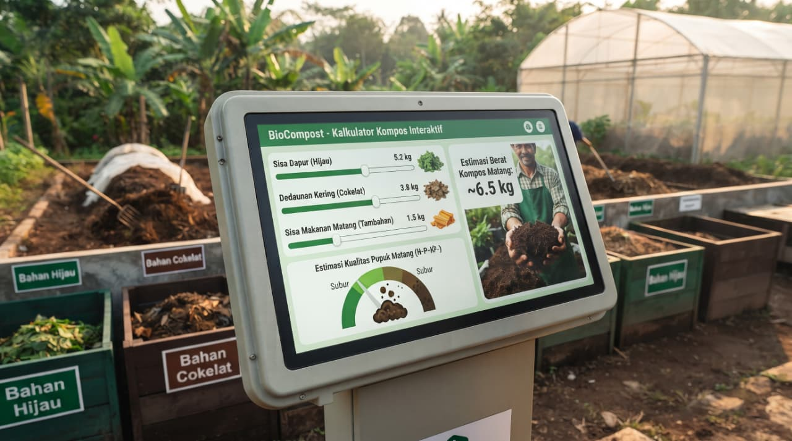
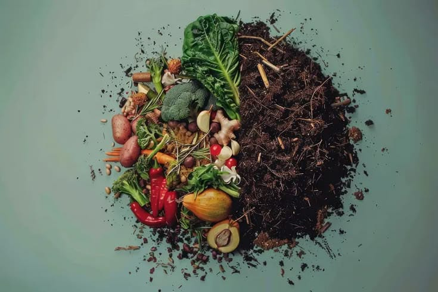
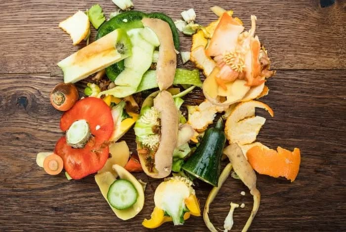
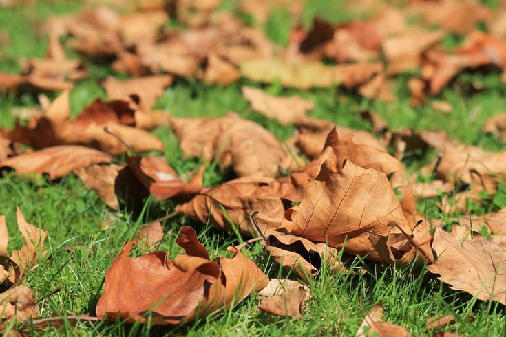
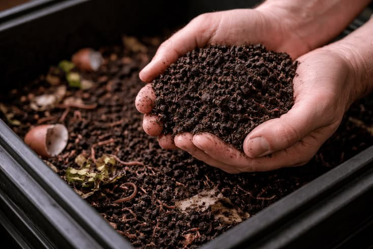

Sains & Praktik Pengelolaan Kompos Berkelanjutan
Portal edukasi interaktif berbasis ensiklopedia untuk memahami proses dekomposisi organik, mengatasi masalah limbah dapur, dan mewujudkan lingkungan hijau.
Ringkasan Portal
BioCompost menyajikan data ekologis, analisis permasalahan penumpukan sampah organik rumah tangga, serta solusi pembuatan kompos mandiri yang bersumber langsung dari Wikipedia.

Permasalahan
Limbah makanan dan sampah dapur yang dibuang sembarangan menghasilkan gas metana di TPA serta mencemari lingkungan sekitar.

Solusi Kompos
Mengubah sampah hijau (nitrogen) dan cokelat (karbon) melalui proses aerasi mikroorganisme menjadi pupuk subur bernutrisi tinggi.

Kalkulator Pintar
Fitur slider interaktif untuk mengukur takaran bahan masukan kompos secara akurat dan memprediksi hasil akhir pupuk matang.
Tentang Kompos & Proyek

Apa itu Kompos?
Kompos adalah pupuk organik yang dihasilkan dari proses dekomposisi bahan-bahan organik oleh mikroorganisme (bakteri pengurai dan jamur) dalam kondisi lingkungan yang terkontrol.

Tujuan Proyek
Portofolio interaktif ini dikembangkan sebagai media pembelajaran berbasis proyek (PBL) untuk mengedukasi masyarakat mengenai pentingnya daur ulang sampah organik secara mandiri di tingkat rumah tangga maupun institusi sekolah.
Artikel & Galeri Kompos
Materi ensiklopedia Wikipedia mengenai kompos serta galeri visual dokumentasi proses pengomposan.

Definisi dan Proses Biokimia
Kompos humus atau kompos adalah bahan organik yang telah mengalami proses pelapukan karena terjadi interaksi antara mikroorganisme (bakteri dan jamur) yang bekerja di dalam bahan organik tersebut. Tanpa adanya oksigen (anaerobik) atau dengan oksigen (aerobik), material ini berubah menjadi tanah subur kaya unsur hara.
Bahan Hijau vs Bahan Cokelat
Dalam pembuatan kompos, keseimbangan unsur Nitrogen (Hijau) dan Karbon (Cokelat) sangat krusial. Bahan hijau meliputi sisa sayuran, buah, dan rumput segar. Sedangkan bahan cokelat meliputi dedaunan kering, ranting pohon, dan jerami.

Sisa Sayuran Dapur
Kategori: Bahan Baku Hijau

Dedaunan Kering Taman
Kategori: Bahan Baku Cokelat

Wadah Komposter Box
Kategori: Proses & Alat

Kompos Siap Panen
Kategori: Hasil Akhir